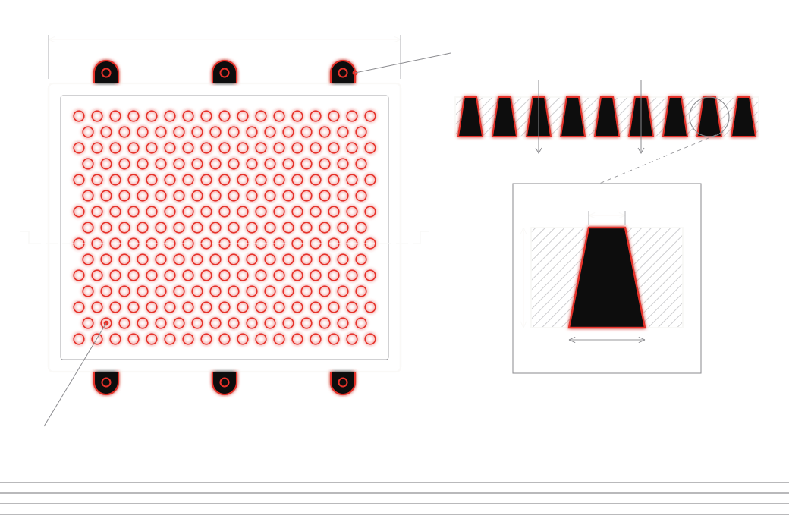

Tavola di riferimento, non il pezzo realeCASO 01Settore: Macchine e OEM
Filtrazione industriale: pannelli in serie ricorrente
Per un costruttore di sistemi di filtrazione industriale produciamo in continuativo pannelli tecnici in polipropilene SAF: serie ricorrente, riordino a magazzino digitale, lotto tracciato. Non un prototipo: una fornitura.
- Materiale e processo
- Polipropilene · SAF
- Tipo di fornitura
- serie ricorrente